| About |
| Research |
| Learning |
| Reads |
| Writes |
| Miscellaneous |
| Bay Area |
| Resume |
Photography
I'm definitely an amateur at this. Most of these pictures were captured with a Samsung S8 camera.
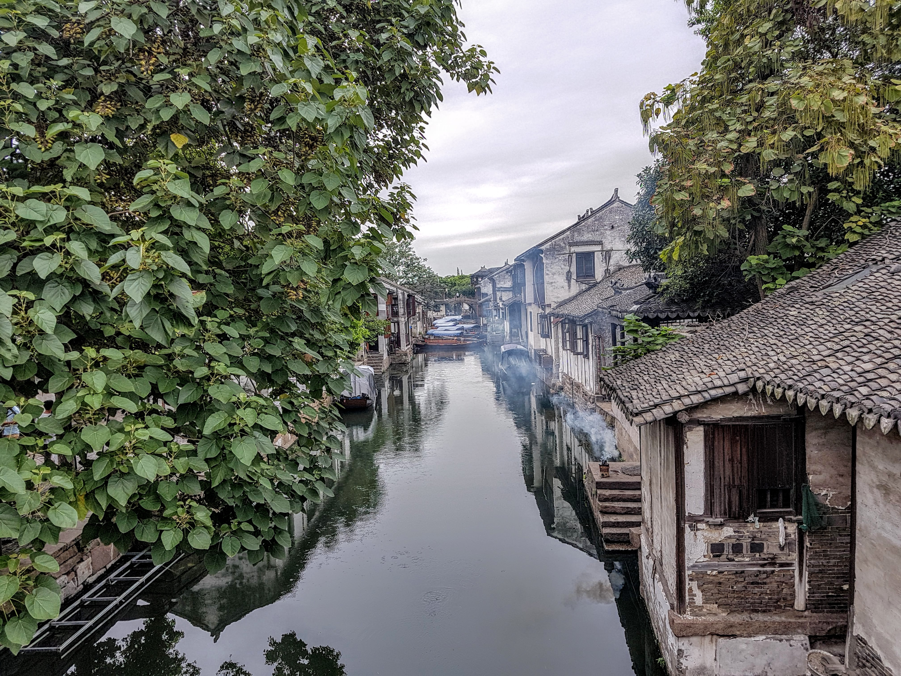


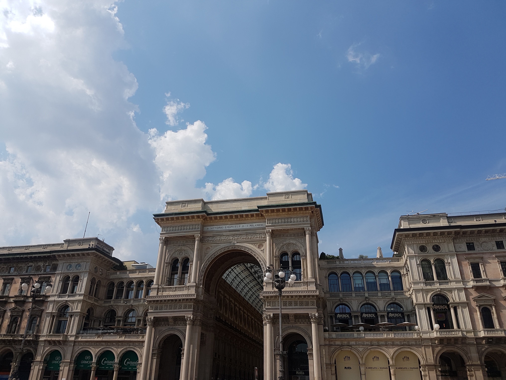

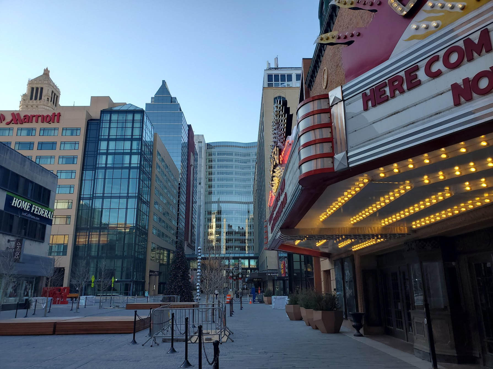
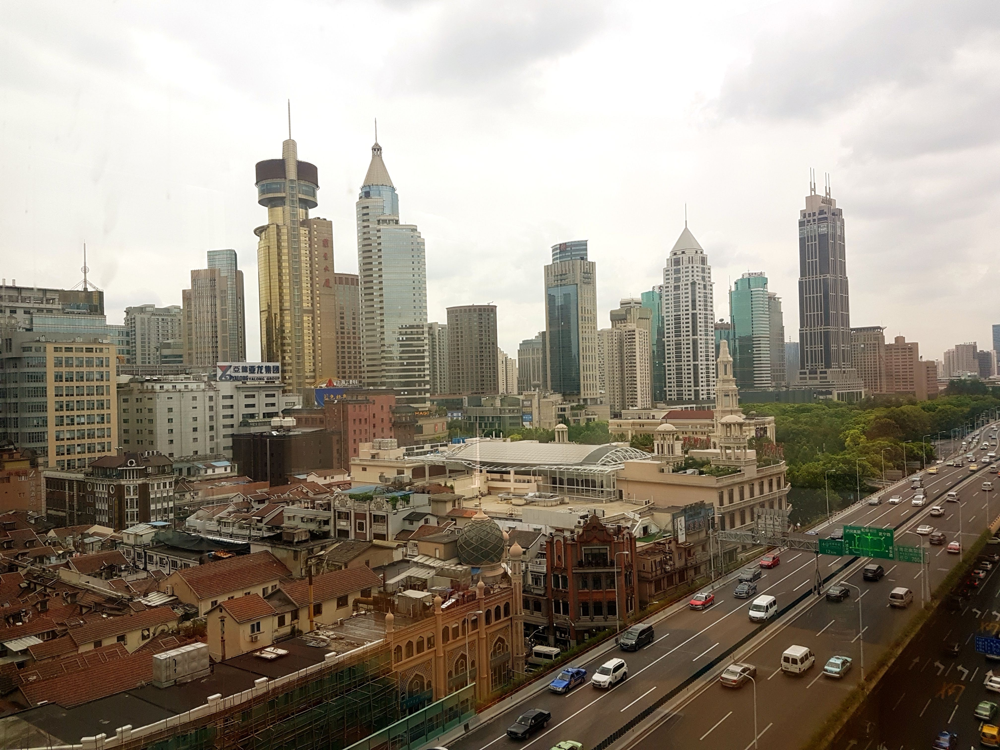
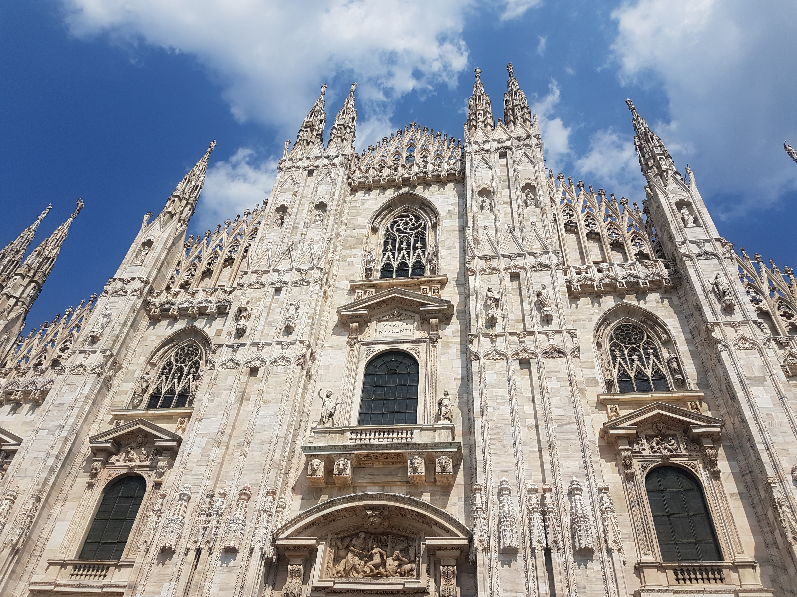
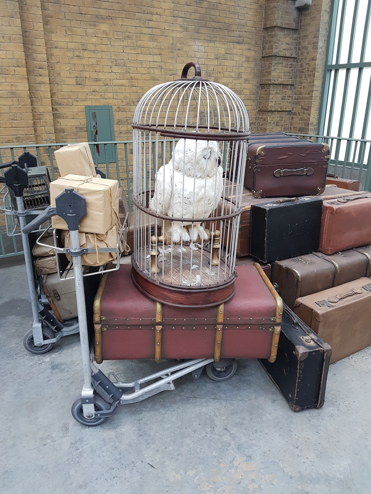
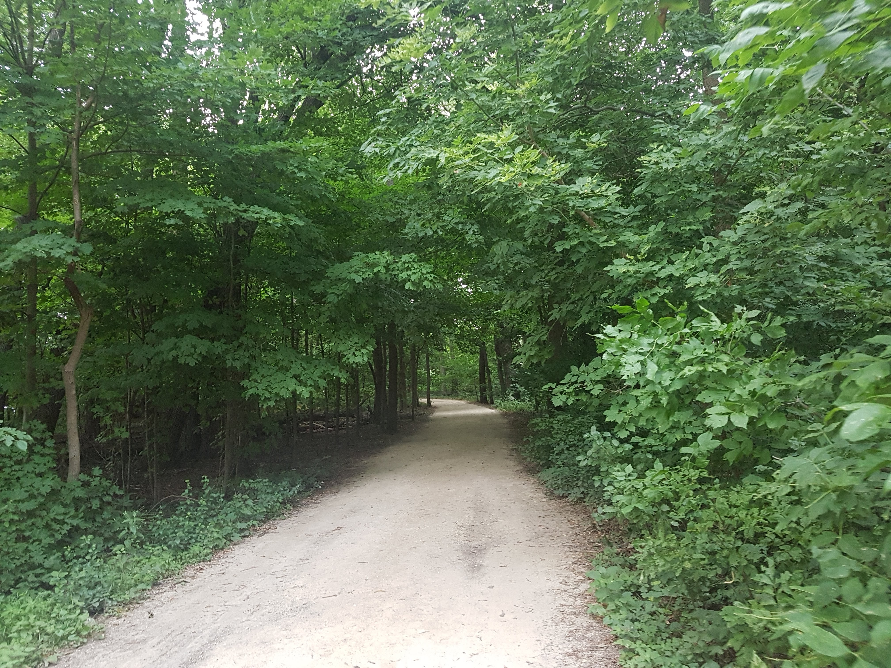
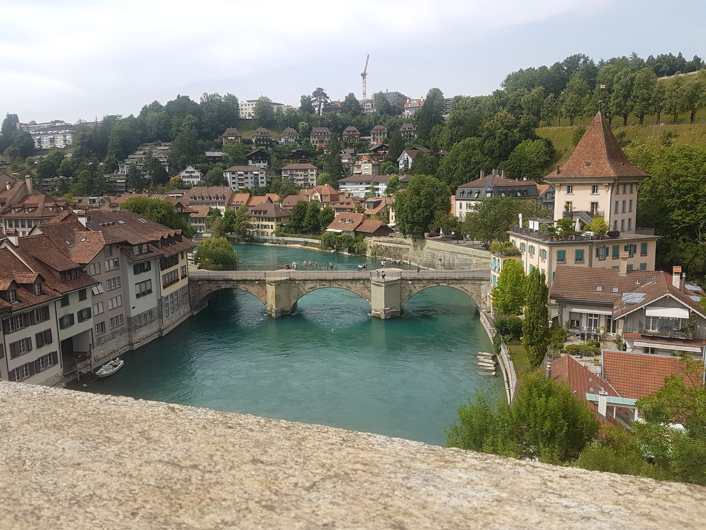
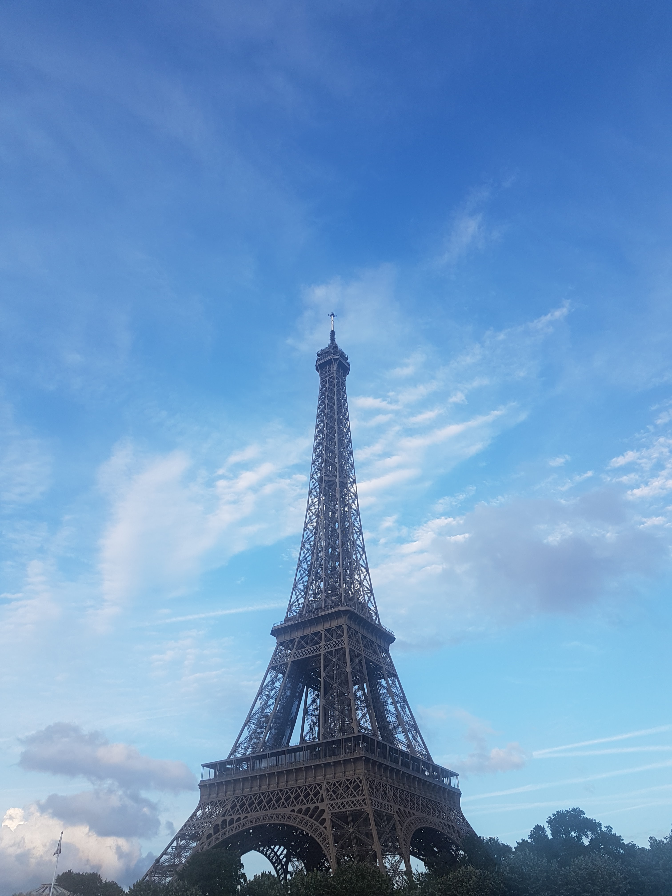

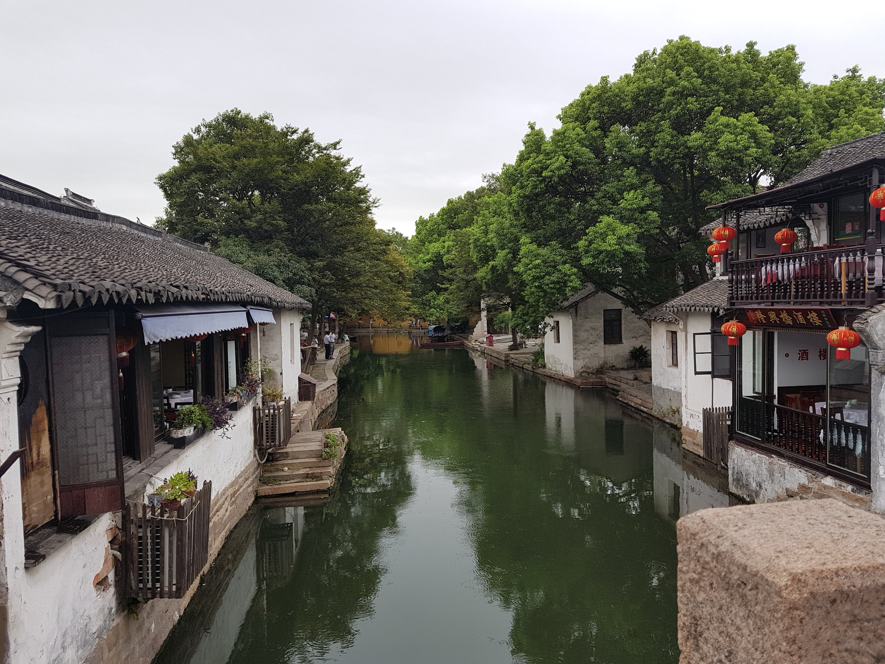
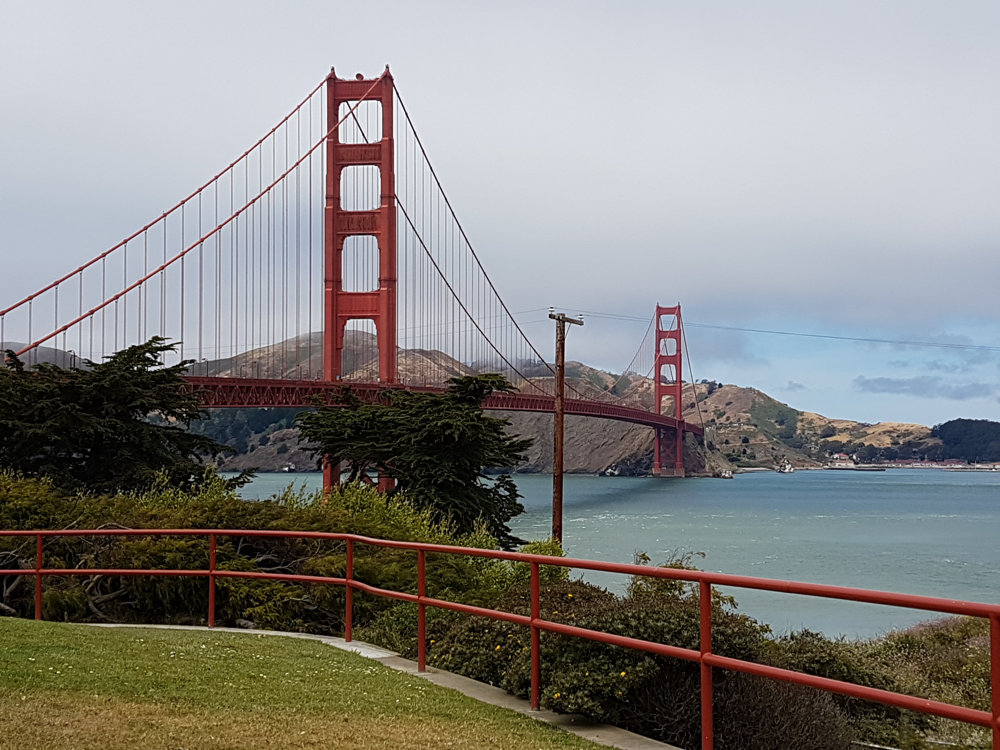
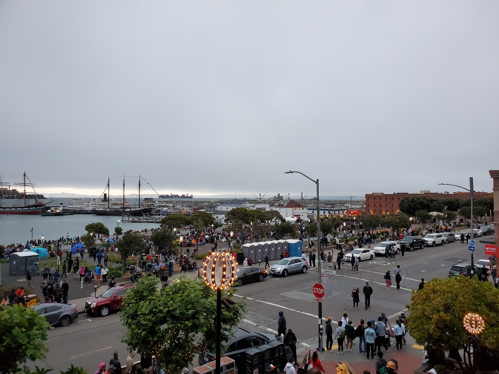
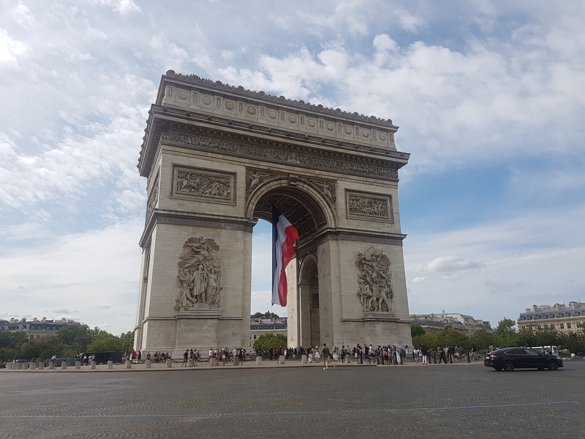
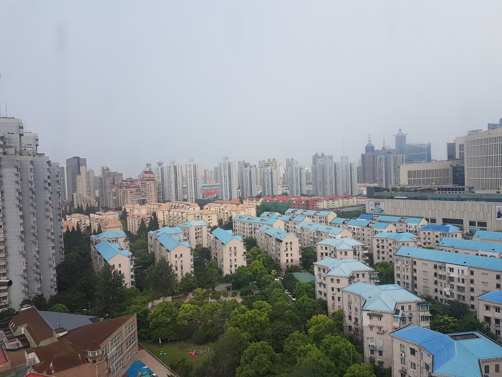
Personal Trivia
- If I could go anywhere in the world, I would go to Antarctica. The sights are pristine, the temperature is perfect for this cold weather, Minnesota-born ectotherm, and glaciers are by far my favorite landform. Antactica would be the expedition of a lifetime. Other dazzling candidates include Norway during the Northern Lights, an IKEA in Sweden, and wherever Santa lives on the North Pole.
- I'm terrified—as in, on my knees, screaming, crying, tearing out strands of my hair—by heights, but I love rollercoasters. I loved every twisting and turning attraction at Universal Studios and Disney World. But I broke down crying on the Great Wall of China as we ascended to the crest of the forested hills—much of the embarrassment of my extended family. I don't understand why. I think it has something to do with Kirkegaard's theory on the anxiety of choice. As in, being strapped on an open car screeching down a metal track doesn't really give me many choices. But when I'm perched atop a tall hill, the angst of every move I make, aware of my autonomy, is dizzying and so terribly frightening.
- I'm terrified—as in, on my knees, screaming, crying, tearing out strands of my hair—by heights, but I love rollercoasters. I loved every twisting and turning attraction at Universal Studios and Disney World. But I broke down crying on the Great Wall of China as we ascended to the crest of the forested hills—much of the embarrassment of my extended family. I don't understand why. I think it has something to do with Kirkegaard's theory on the anxiety of choice. As in, being strapped on an open car screeching down a metal track doesn't really give me many choices. But when I'm perched atop a tall hill, the angst of every move I make, aware of my autonomy, is dizzying and so terribly frightening.
- Favorite Book: The Great Gatsby by F. Scott Fitzgerald.
- Favorite Play: Hamlet by Shakespeare
- Favorite Song: Hymn for the Weekend by Coldplay
- Favorite Artist: Avicii 🙏.
- Favorite Food: Yogurt parfait with extra granola.
- Favorite Movie: Spider-Man: Into the Spider-Verse (2018)
- Favorite TV Show: Gravity Falls.
- Favorite Video Game: Phoenix Wright: Ace Attorney, developed by Capcom.